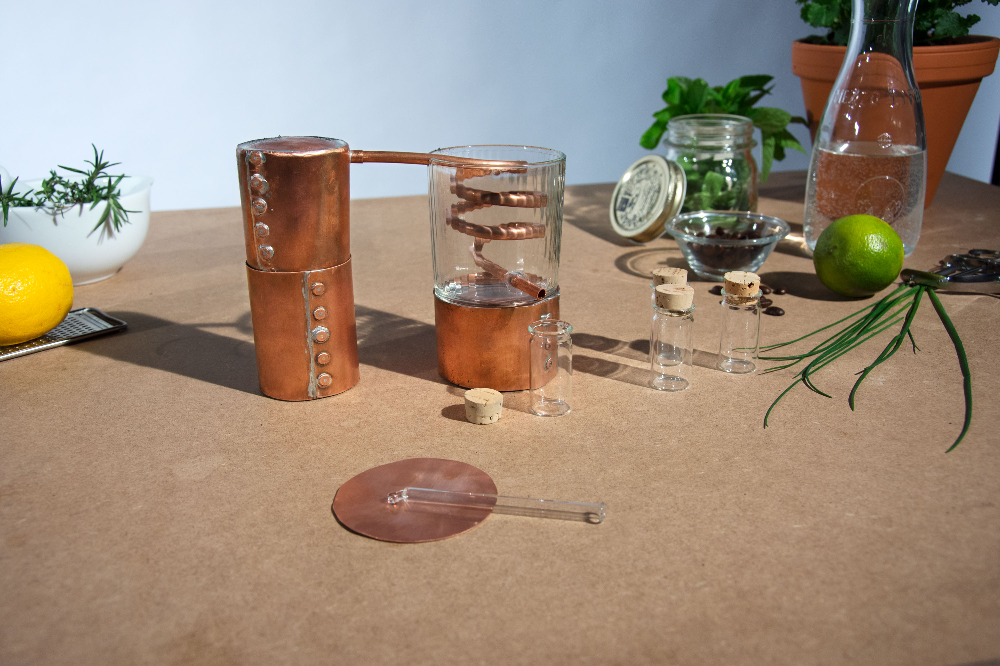
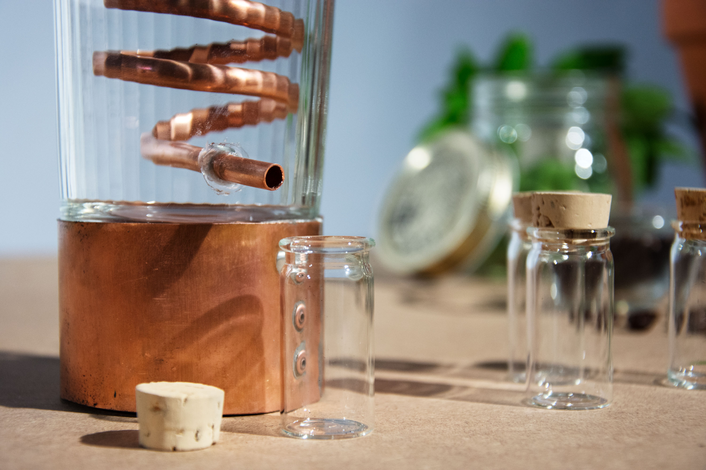

The concept of home varies widely in comprehension. For some of it might be scenic features, like mountains, or the country itself. For others it might rather be about the social fabric surrounding them. The question we asked is what happens when people are forced to leave the place they call home.
There once was a boy called Peter. He lived in a small village with his mother, father and his younger sister. They where living a very happy live. Every day Peter played on the greenest grass one could imagine, fished the mountain streams with his friends and helped out his friendly neighbours. Sadly Peter was not able to live there any longer. The protective dam above the village could not bear the wild water any longer. Peter and all the others had to leave their homes behind in a hurry. It was not Peters fault but that of generations before him. Filled with anger and sadness they had to leave. They went to a big city with grey walls and dirty, lifeless streams. This did not feel like home. And one by one the people moved on. If only they could have taken «home» with them.
Peter’s story is not singular. All over the world people are forced to leave their homes for reasons they can’t influence. We believe situations like these are on the verge. We worked hard on finding a way to give people the feeling of home, when they need it the most.
As diverse as the perception of what home constitutes are, they all share an inherent bond with our olfactory memory. It is the subconscious storage of scents, that inevitably summons long forgotten memories and sentiments, from the day we enter this world. How can we enable people to record, collect, store and share the memories of their home in the shape of scents?
In unserem handgemachten kit befindet sich alles was man zum destillieren und aufbewahren einer erinnerung braucht. Die kleine kupfer destille ist praktisch für unterwegs und kann auch mit einfach Kerzen beheizt werden. Mit einem Sieb kann das rohmaterial sowohl ausserhalb als auch im Wasser destilliert werden.
 